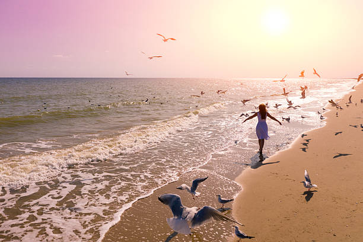
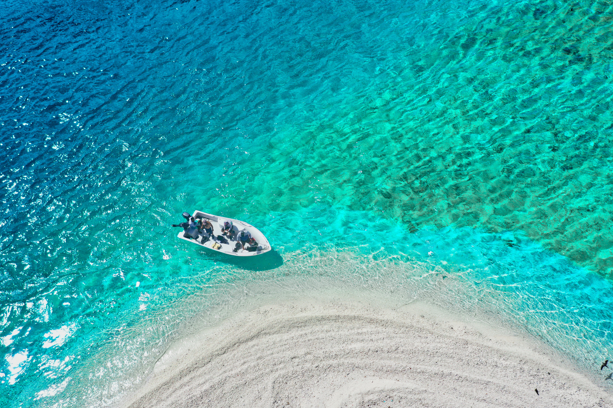
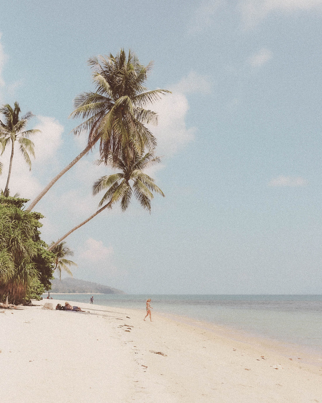

DAY 01
DAY 01Arrive, Unwind, Reconnect
Travel through Batangas and Calapan, enjoy a local welcome stop, check in at Puerto Galera, take a gentle coastal walk, and finish with sunset reflection.
TravelCoastal WalkSunset
REST • RECONNECT • REJUVENATE
A thoughtfully planned Mindoro escape connecting Calapan's welcome with Puerto Galera's coast, nature, local food, gentle movement, and meaningful moments.
 Puerto Galera coastal escape
Puerto Galera coastal escapeABOUT BALAYANI
Balayani Wellness Escape brings together convenient travel, restful stays, local food, gentle movement, and meaningful community in one carefully planned journey.
It is designed for students, professionals, and couples who want a restorative coastal trip without the stress of arranging every detail on their own.
Make a restorative Mindoro experience easier to plan.
Combine wellness, nature, coastal travel, and local connection.
One coordinated journey from Calapan welcome to Puerto Galera stay.
TOURISM PACKAGE
Calapan welcome, Puerto Galera coast, nature, movement, reflection, and local experiences.
DAY 01Travel through Batangas and Calapan, enjoy a local welcome stop, check in at Puerto Galera, take a gentle coastal walk, and finish with sunset reflection.
 DAY 02
DAY 02Begin with sunrise yoga and breathwork, followed by breakfast, a guided nature or waterfall experience, local lunch, a wellness activity, and gratitude circle.
 DAY 03
DAY 03Start with sunrise reflection and breakfast, visit a local market or craft outlet, enjoy a farewell lunch, and travel home renewed.
A complete, affordable Mindoro wellness reset connecting Calapan's welcome with Puerto Galera's sea, forest, and mindful hospitality, with the main arrangements planned for you.
EXPERIENCE
Every activity is designed to keep the pace gentle while leaving room for connection and discovery.

Begin with fresh air, quiet views, sunrise reflection, yoga, and breathwork.

Enjoy gentle walks, beach meditation, beginner snorkeling, or relaxed time by the water.

Explore a guided waterfall, trail, or nature attraction subject to safety and access.

Share meals, discover local places, and finish the day with simple reflection.
GALLERY
Explore the coastal, nature, and island visuals used for the Balayani travel concept.

From early morning calm to evening by the pier, the visual experience is centered on simple moments and responsible enjoyment of Mindoro's natural setting.
Start planning →



Photo assets are based on the supplied Balayani Wellness Escape brochure and its accompanying visual materials.
DESTINATION
Oriental Mindoro, Philippines
The concept combines a Calapan welcome with a Puerto Galera coastal stay and guided nature experience.
Round-trip land transfers, ferry transfers, and local Mindoro transport are part of the package, subject to final confirmation.
Ferry schedules, tides, weather, supplier availability, and safety conditions may change the activity sequence.
TRAVEL GUIDE
Useful reminders for a comfortable three day wellness escape.
Bring practical beach and nature gear, stay aware of changing conditions, and follow local guides and safety instructions.
A short three day wellness reset for students, professionals, and couples.
Comfortable clothes, sun protection, reusable water bottle, personal medicines, and practical beach or nature gear.
Activity sequence may shift because of ferry schedules, weather, tides, and supplier availability.
Respect communities, keep coastal and nature areas clean, minimize waste, and follow guide instructions.
Nature activities depend on safety and access conditions. Basic first-aid support is included.
Student rate is ₱8,450 per person. Shared-room rate is ₱8,950 per person. Confirm final rates before payment.
BOOKING & INQUIRY
A non-refundable deposit confirms a booking. Balance is due seven days before departure. Final availability, rates, ferry schedules, and activities are confirmed before payment.
CONTACT US
Reach the Balayani Travel & Wellness Desk for package inquiries and final booking confirmation.
Calapan to Puerto Galera, Oriental Mindoro